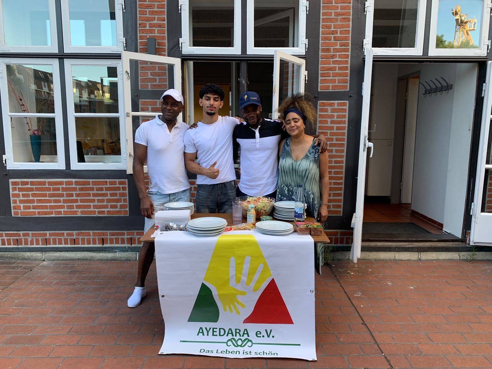
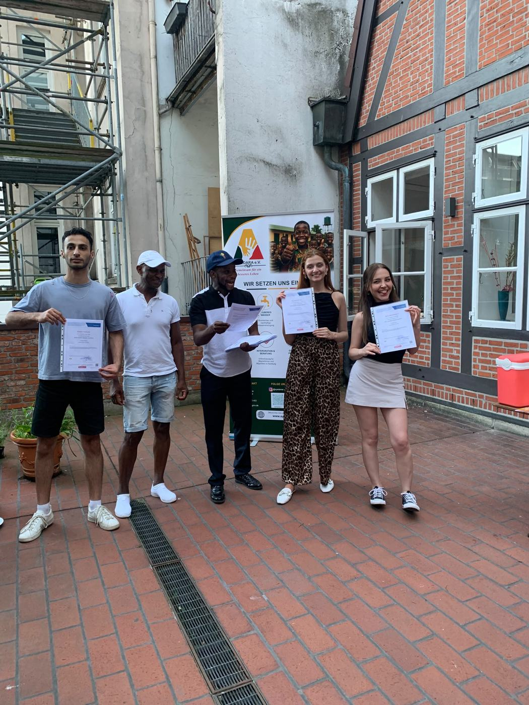
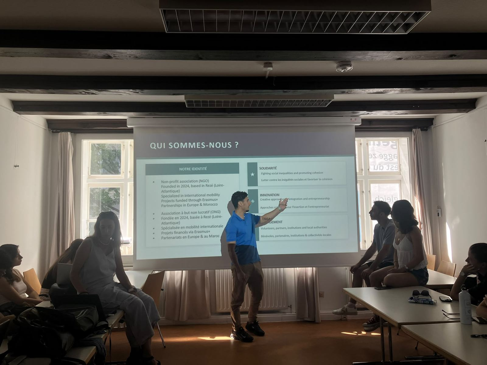
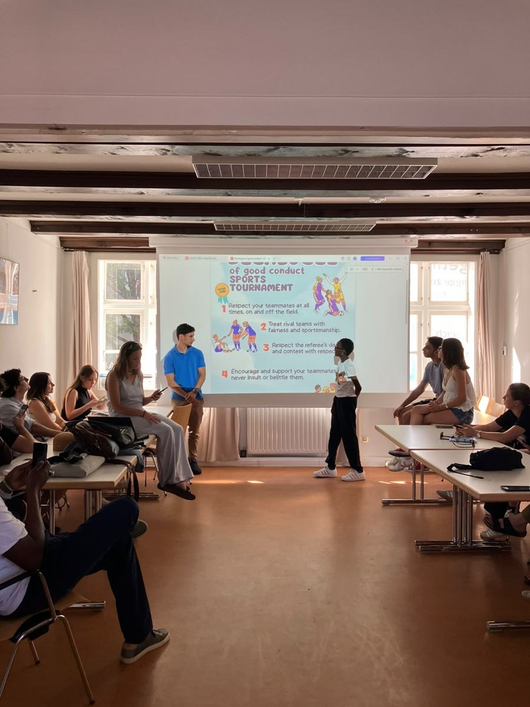
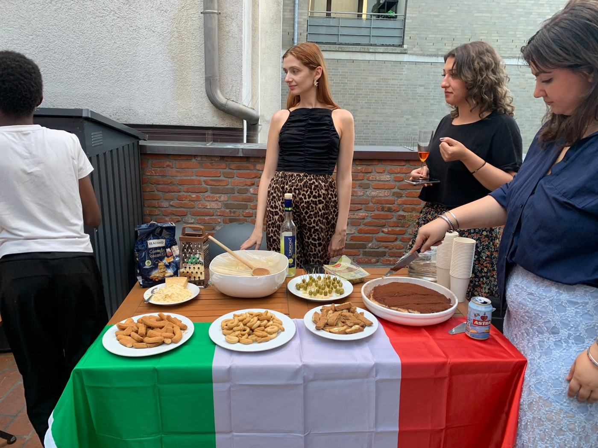
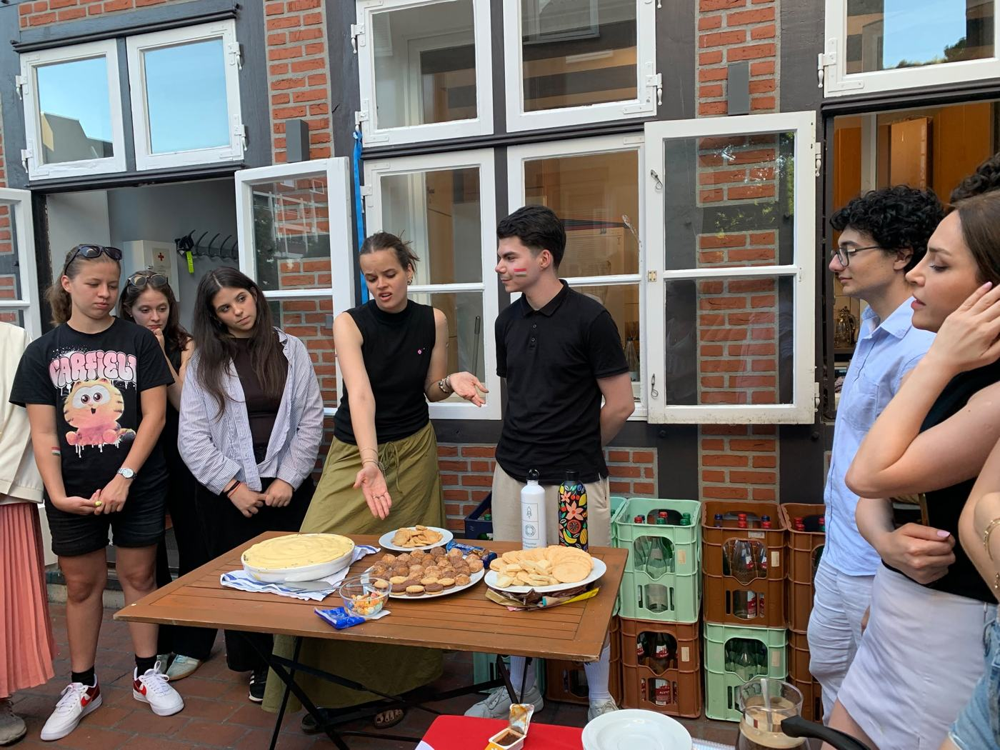
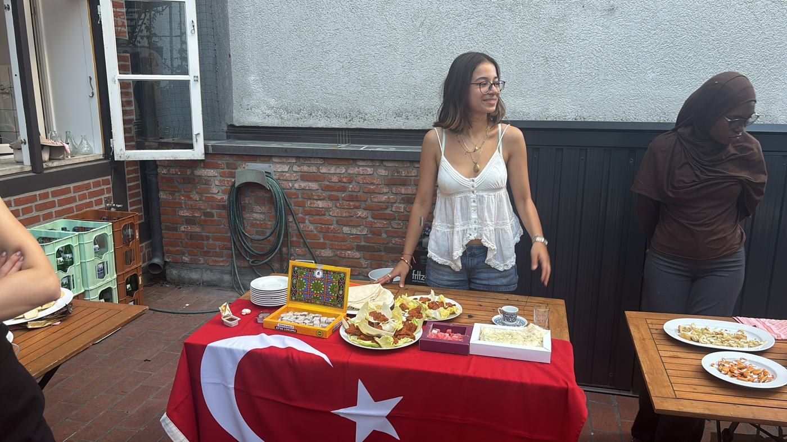
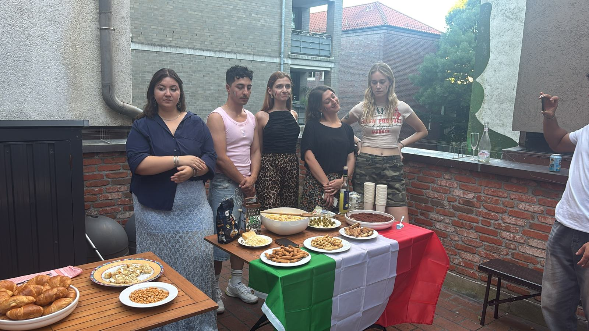
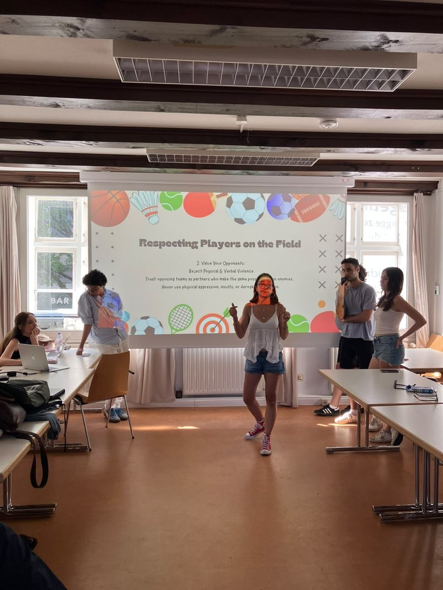

Jeunesse et mobilité
Échanges de jeunes Erasmus+, coopération franco-allemande, ateliers de leadership, de communication interculturelle et de gestion de projet.
Cross Borders conçoit et conduit des projets européens qui ouvrent aux jeunes et aux femmes les portes de la mobilité, de l'entrepreneuriat et de l'engagement citoyen.

Nous croyons qu'une expérience à l'étranger change une trajectoire, et qu'elle doit ensuite nourrir la vie du quartier, de la commune, de l'association d'à côté.
Favoriser une coopération internationale qui fait progresser l'égalité sociale et l'autonomie économique, par l'éducation non formelle et l'échange culturel.
Un monde où les frontières relient au lieu de limiter, où l'inclusion est la norme et l'action collective un moteur de progrès social.
Rapprocher les peuples Nord-Nord et Nord-Sud, contribuer à la construction européenne, faciliter l'insertion professionnelle des jeunes, lutter contre le racisme et l'antisémitisme.
Échanges de jeunes Erasmus+, coopération franco-allemande, ateliers de leadership, de communication interculturelle et de gestion de projet.
Rencontres féminines, accès aux droits des femmes issues de l'immigration, inclusion socio-économique des femmes en milieu rural.
Formation et mentorat pour aider les jeunes à créer leur activité et à faire vivre leur territoire.
Montage de dossiers, recherche de partenaires, coordination de consortiums et évaluation, pour nos projets et ceux des structures que nous accompagnons.
Nos actions sont cofinancées par le programme Erasmus+ de l'Union européenne et menées avec des partenaires dans plusieurs pays.

Dans le prolongement de notre coopération franco-allemande, des jeunes venus de plusieurs pays européens ont travaillé ensemble : présentation des associations, ateliers sur le fair-play et le respect dans le sport, soirée interculturelle autour des cuisines italienne, hongroise et turque, puis remise des attestations.
Hongrie, Allemagne, Italie, Turquie et France réunies à Rezé. Sept jeunes rezéennes impliquées dans les ateliers et les activités interculturelles.
Jeux traditionnels et sport au service de l'inclusion : des jeunes d'origines diverses se rencontrent, avec une formation de formateurs à Fuente de Piedra.
« Entrepreneurial Countryside to Boost Rural Businesses » : une initiative écologique et économique pour le développement durable des communautés rurales.
Un échange de jeunes validé par l'Agence Erasmus+ France Jeunesse & Sport. Dix jeunes rezéens formés au leadership, à la communication interculturelle et à la gestion de projet.
Ateliers d'information sur les droits, formations en français, en numérique et en entrepreneuriat, groupes d'entraide et forums avec les institutions locales.
Trop de jeunes et d'associations ignorent ce que l'Europe finance près de chez eux. Nous allons à leur rencontre pour l'expliquer simplement et les accompagner jusqu'au départ.
Présentation interactive des dispositifs d'engagement, témoignages de jeunes partis en mobilité et atelier « Dessine ton association de demain ».
Présence au Forum des associations de Rezé et participation à son comité de pilotage, pour rendre les programmes européens visibles du grand public.
Rencontres régionales de la mobilité internationale (DRAJES, Angers), soirée à la Maison de l'Europe à Nantes, Rencontres de la vie associative.
Orientation des jeunes vers le bon dispositif et appui aux associations et collectivités qui veulent monter leur premier projet européen.
Des groupes de jeunes de plusieurs pays se retrouvent quelques jours ou quelques semaines autour d'un thème commun. Voyage, hébergement et activités sont pris en charge par le programme. C'est le cœur de notre action.
Un volontariat de quelques semaines à douze mois dans une structure d'un autre pays, ou un projet de solidarité porté localement par un groupe de jeunes.
Des coopérations entre organisations sportives et associatives européennes, pour faire du sport un levier d'inclusion, de santé et d'égalité.
L'Office franco-allemand pour la Jeunesse soutient les rencontres de jeunes, les échanges scolaires et extrascolaires et les projets communs entre la France et l'Allemagne.
Un engagement volontaire de six à douze mois, en France ou à l'étranger, ouvert jusqu'à 30 ans aux jeunes en situation de handicap.
Le programme européen qui finance les projets de participation citoyenne, d'égalité, de lutte contre les discriminations et de protection des droits.
Les conditions précises évoluent chaque année : nous vérifions avec vous l'éligibilité et le calendrier avant toute démarche.
Une idée de projet commence souvent par une conversation. Le Lab est l'endroit où nous la travaillons, avec vous, jusqu'à en faire un dossier solide.
Un besoin repéré sur le terrain, par un jeune, une habitante, une association.
Objectifs, public, résultats attendus et dispositif de financement adapté.
Constitution du consortium en France et à l'étranger.
Rédaction, budget et dépôt du dossier auprès du financeur.
Un projet européen pour aider les jeunes femmes à créer des activités respectueuses de l'environnement.
Un partenariat européen qui fait du sport un levier d'inclusion et de respect.
Une piste de coopération autour de l'accès à l'eau et de l'inclusion numérique.
Trois jours consacrés à une culture invitée : expositions, projections, ateliers, spectacles et rencontres économiques.
De nouvelles destinations et de nouveaux partenaires en Europe pour les jeunes que nous accompagnons.
Jeune, habitant, association ou collectivité : écrivez-nous en quelques lignes, nous revenons vers vous pour un premier échange.
Proposer une idéeAteliers sur l'engagement associatif et le fair-play, soirée interculturelle et remise des attestations aux participants.
Cinq pays partenaires accueillis pour neuf jours d'ateliers et d'activités interculturelles.
Trente participantes autour de l'autonomisation, du leadership, de la confiance en soi et de l'inclusion socio-économique.
Dix dirigeants associatifs en atelier, quarante participants à la table ronde.
Dix jeunes rezéens bénéficiaires directs.
Rencontre avec les acteurs européens du territoire nantais.
Ateliers collaboratifs organisés par la DRAJES.
Autonomisation des femmes et entrepreneuriat, puis inclusion des femmes issues de l'immigration.







Faites glisser pour voir toutes les photos →
Associations, collectivités et institutions qui partagent la même exigence d'inclusion.
Devenez membre actif, participez à l'assemblée générale et à la vie de l'association, ouverte à tous sans condition ni distinction.
Rejoignez un échange de jeunes, un atelier ou une rencontre. Écrivez-nous pour connaître les prochains départs.
Co-construisons un projet Erasmus+, un atelier sur l'engagement des jeunes ou une action de coopération Nord-Sud.